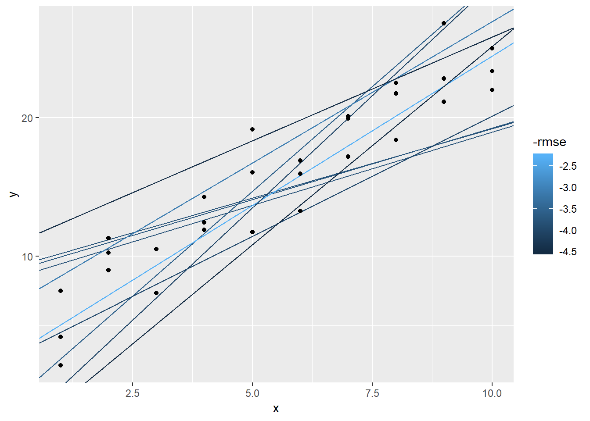
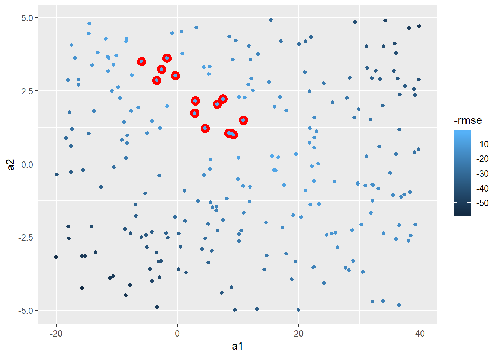

Chapter 28 Appendix
28.1 Other model families
Generalised linear models, e.g.
stats::glm(). Linear models assume that the response is continuous and the error has a normal distribution. Generalised linear models extend linear models to include non-continuous responses (e.g. binary data or counts). They work by defining a distance metric based on the statistical idea of likelihood.Generalised additive models, e.g.
mgcv::gam(), extend generalised linear models to incorporate arbitrary smooth functions. That means you can write a formula likey ~ s(x)which becomes an equation likey = f(x)and letgam()estimate what that function is (subject to some smoothness constraints to make the problem tractable).Penalised linear models, e.g.
glmnet::glmnet(), add a penalty term to the distance that penalises complex models (as defined by the distance between the parameter vector and the origin). This tends to make models that generalise better to new datasets from the same population.Robust linear models, e.g.
MASS:rlm(), tweak the distance to downweight points that are very far away. This makes them less sensitive to the presence of outliers, at the cost of being not quite as good when there are no outliers.Trees, e.g.
rpart::rpart(), attack the problem in a completely different way than linear models. They fit a piece-wise constant model, splitting the data into progressively smaller and smaller pieces. Trees aren’t terribly effective by themselves, but they are very powerful when used in aggregate by models like random forests (e.g.randomForest::randomForest()) or gradient boosting machines (e.g.xgboost::xgboost.)
28.2 23.2 book example
models <- tibble(
a1 = runif(250, -20, 40),
a2 = runif(250, -5, 5)
)
ggplot(sim1, aes(x,y))+
geom_abline(aes(intercept = a1, slope = a2), data = models, alpha = 0.25)+
geom_point()
Next, lets set-up a way to calculate the distance between predicted value and each point.
models_error <- models %>%
mutate(preds = map2(.y = a1, .x = a2, ~mutate(sim1,
pred = .x*x + .y,
resid = y - pred,
error_squared = (y - pred)^2,
error_abs = abs(y - pred))),
rmse = map_dbl(preds, ~(with(.x, mean(error_squared)) %>% sqrt(.))),
mae = map_dbl(preds, ~with(.x, mean(error_abs))),
rank_rmse = min_rank(rmse))ggplot(sim1, aes(x, y))+
geom_abline(aes(intercept = a1, slope = a2, colour = -rmse),
data = filter(models_error, rank_rmse <= 10))+
geom_point() 
Could instead plot this as a model of a1 vs a2 and whichever does the best
models_error %>%
ggplot(aes(x = a1, y = a2))+
geom_point(colour = "red", size = 4, data = filter(models_error, rank_rmse < 15))+
geom_point(aes(colour = -rmse))
Could be more methodical and use Grid Search. Let’s use the min and max points of the top 15 to set.
#need helper function because distance function expects the model as a numeric vector of length 2
sim1_rmse <- function(b0, b1, df = sim1, x = "x", y = "y"){
((b0 + b1*df[[x]]) - df[[y]])^2 %>% mean() %>% sqrt()
}
sim1_rmse(2,3)## [1] 4.574414grid_space <- models_error %>%
filter(rank_rmse < 15) %>%
summarise(min_x = min(a1),
max_x = max(a1),
min_y = min(a2),
max_y = max(a2))
grid_models <- data_grid(grid_space,
a1 = seq(min_x, max_x, length = 25),
a2 = seq(min_y, max_y, length = 25)
) %>%
mutate(rmse = map2_dbl(a1, a2, sim1_rmse, df = sim1))
grid_models %>%
ggplot(aes(x = a1, y = a2))+
geom_point(colour = "red", size = 4, data = filter(grid_models, min_rank(rmse) < 15))+
geom_point(aes(colour = -rmse))
In the future add-in a grid-search that would have used PCA to first rotate axes and then do min and max values.
Could instead use Newton-Raphson search with optim
model_1df <- function(betas, x1 = sim1$x) {
betas[1] + x1 * betas[2]
}
measure_rmse <- function(mod, data) {
diff <- data$y - model_1df(betas = mod, data$x)
sqrt(mean(diff^2))
}
best_rmse <- optim(c(0,0), measure_rmse, data = sim1)
best_rmse$par## [1] 4.222248 2.051204## [1] 2.128181Above is equivalent to R’s lm function
## (Intercept) x
## 4.220822 2.051533## [1] 2.128181- Notice are slightly different, perhaps due to number of steps optim will take
E.g. could build a function for optimizing upon MAE instead and still works
measure_mae <- function(mod, data) {
diff <- data$y - model_1df(betas = mod, data$x)
mean(abs(diff))
}
best_mae <- optim(c(0,0), measure_mae, data = sim1)
best_mae$par## [1] 4.364852 2.04891828.2.1 tidy grid_space
Below is a pseudo-tidy way of creating the grid_space var from above, it actually took more effort to create this probably, so didn’t use. However you could imagine if you had to do this across A LOT of values it could be worth doing it this way
funs_names <- tibble(funs = c(rep("min", 2), rep("max", 2)),
coord = rep(c("x", "y"), 2),
field_names = str_c(funs, "_", coord))
grid_space <- models_error %>%
filter(rank_rmse < 15) %>%
select(a1, a2) %>%
rep(2) %>%
invoke_map(.f = funs_names$funs,
.x = .) %>%
set_names(funs_names$field_names) %>%
as_tibble()
grid_space## # A tibble: 1 x 4
## min_x min_y max_x max_y
## <dbl> <dbl> <dbl> <dbl>
## 1 -5.96 0.998 10.9 3.6128.3 23.4.5.4
Rather than geom_density or geom_freqpoly let’s look at histogram with values overlaid rather than stacked.
```r
sim4 %>%
gather_residuals(mod1, mod2) %>%
ggplot(aes(x = resid, y = ..density.., fill = model))+
geom_histogram(position = "identity", alpha = 0.3)
```
<img src="23-model-basics_files/figure-html/unnamed-chunk-30-1.png" width="672" />```
Make sure the following packages are installed: